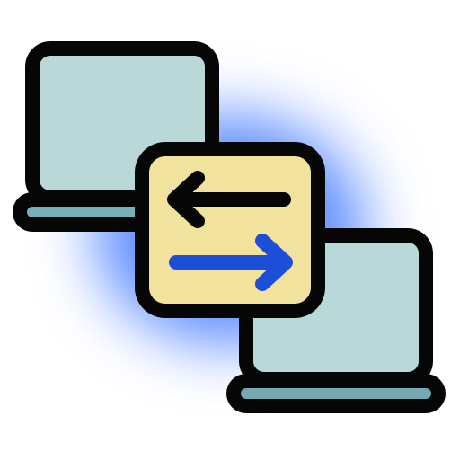

On this device
Split, then blended
The file is cut into numbered chunks. Each frame you see is one chunk — or several XOR'd together into a single code that can stand in for any of them.

OQTP·2 Other device Open the receiverOptical transport · no server, no pairing
This screen becomes the cable. Your file is split into chunks, blended into a stream of codes, and thrown at the other device's camera until it has everything.
Choose the file to send
Drop it anywhere on this panel, or
Read in this browser. Never uploaded.
On this device
The file is cut into numbered chunks. Each frame you see is one chunk — or several XOR'd together into a single code that can stand in for any of them.
On the other device
Missed frames cost nothing. There is no request for a resend, because no frame is worth more than the next one. The camera simply keeps watching until the file solves.
At the end
The rebuilt file is hashed and compared against this one before it is offered to anybody. Nothing is written over there until they press save.
Ready to send
Transmission settings
—/—